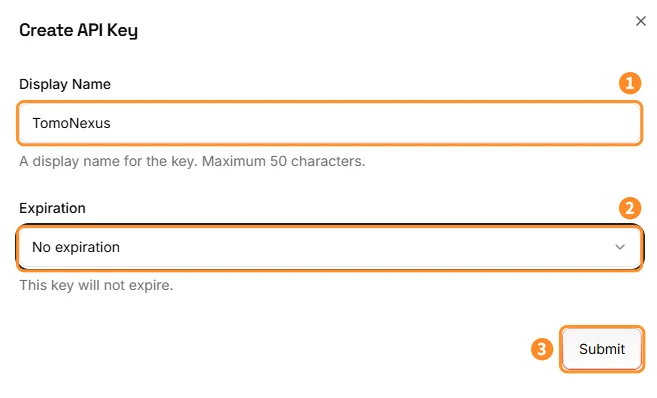
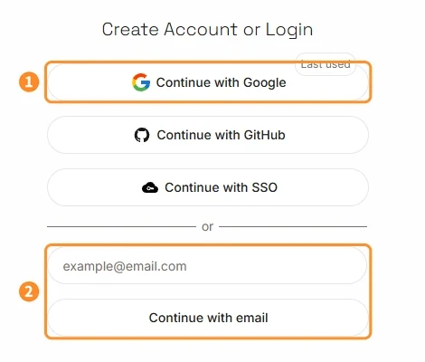
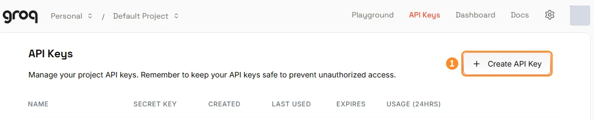
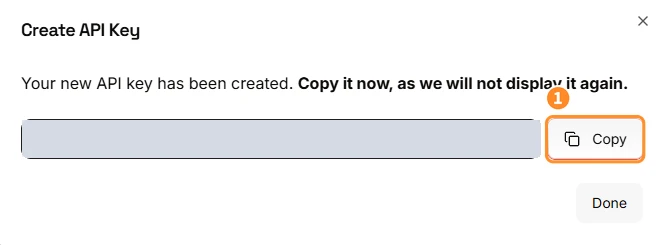
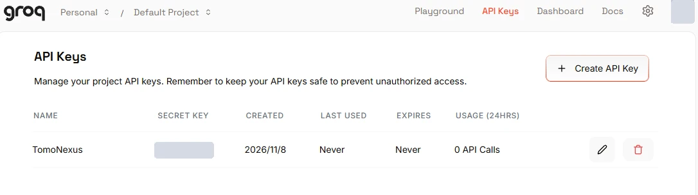

Groq API guide
聞き取りの「予備」を、無料で用意する。
Groq は、話した声を文字にする聞き取りの予備です。入れておくと、Azure の無料枠（月5時間）を超えた月や、聞き書きモードで長く話すときに、代わりに聞き取ってくれます。なくても TomoNexus は動きます。

Good to know
i3つのキーの中で、いちばんカンタンです
無料プランなら、Google や GitHub のアカウントでログインして、キーを作るだけ。お金がかかることはありません。
無料プランの聞き取りは、1時間あたり2時間分・1日8時間分の音声まで（2026年11月時点）。ふだんの会話や聞き書きには十分です。
聞き書きモードで長く話す人は、Groq を入れておくと Azure の無料枠を節約できるよ。3分で終わるから、ついでに作っちゃお！
GroqCloud にログイン（アカウントを作る）
GroqCloud（console.groq.com）を開きます。「Create Account or Login」の画面で、どれかを選びます。
- 1Continue with Google（GitHub でもOK）：いちばん手軽です
- 2メールアドレスを入れて「Continue with email」：届いたメールのリンクからログインします
はじめての方は、そのままアカウントが作られます。

「API Keys」を開いて、キーを作り始める
上のメニューの API Keys を開いて、右の 1＋ Create API Key を押します。
画面は英語だけど、押すのは2〜3か所だけだから大丈夫！

名前と有効期限を決めて作成
- 1Display Name（名前）：自分でわかる名前に（例：
TomoNexus） - 2Expiration（有効期限）：「No expiration」（無期限）がおすすめ。期限をつけると、その日から聞き取りの予備が使えなくなります
- 3「Submit」を押す
キーをコピーする（表示は1回だけ）
作ったキー（gsk_ で始まる長い文字）が表示されます。1Copy を押してコピーし、「Done」で閉じます。
「Copy it now, as we will not display it again.」＝今コピーしてね、もう表示しないよって意味！閉じちゃったら、キーを作り直せばOKだよ。
一覧に戻ると、作ったキーが並びます（キーの文字は最初と最後しか表示されません）。


TomoNexus に貼って完了
TomoNexus のセットアップ画面（または設定画面）の Groq の欄に、コピーしたキーを貼り付ければ完了です。あとは TomoNexus が、必要なときに自動で Groq を使います。
- Azure の聞き取りが月5時間を超えた月は、Groq で聞き取ります
- 聞き書きモード（製品版）では、Groq のキーがあれば Groq で聞き取ります
無料のキーでも、人に見せるのは NG。見られちゃったら、一覧のゴミ箱マークで消して、作り直してね。
※ 空のままでも TomoNexus は動きます
FAQ
よくある質問
Groq は入れないとダメ？
いいえ、任意です。なくても Azure で聞き取れます。Azure の無料枠（月5時間）を超えそうなときや、聞き書きモードで長く話すときに入れておくと安心です。
本当に無料？あとから請求されない？
無料プランのままなら請求されません。カードを登録していないので、請求のしようがありません。無料の上限を超えた分は、しばらく待つと（1時間ごと・1日ごとに）また使えるようになります。
話した声は Groq に保存される？
聞き取りのために音声を送ります。データの扱いは プライバシーポリシー と、Groq の Your Data in GroqCloud をご覧ください。
キーを人に見られてしまいました
API Keys の一覧で、そのキーのゴミ箱マークを押して削除してください。新しいキーを作って、TomoNexus に貼り直せば大丈夫です。
※ 画面・料金・無料の上限は Groq の都合で変わることがあります。最新の情報は Groq の Rate Limits でご確認ください。このページは TomoNexus が作った説明で、Groq とは関係ありません。